Värde uppstår när nytta och risk hanteras samtidigt
NordIQ ska minska väntetider och repetitiva tickets, men samtidigt introduceras AI-risk, leverantörsberoenden och krav på uppdaterad knowledgebase.
Praktiskt: vi visar både risk/cost removed och risk/cost imposed.

Anna Berg
Vill: stabil drift och färre repetitiva ärenden.
Oro: fel eskalering ökar second-line-belastningen.

Karl Eek
Vill: visa att AI-agentplattformen fungerar.
Oro: plattformen får skulden om svaren blir fel.

Martin Lindqvist
Vill: board-ready story och Q4-besparing.
Oro: politiskt ansvar om go-live fallerar.

Erik Holm
Vill: förutsägbara kostnader och kontrollerade leverantörer.
Oro: tokenkostnader och CloudFrame/Lumeon-beroenden.
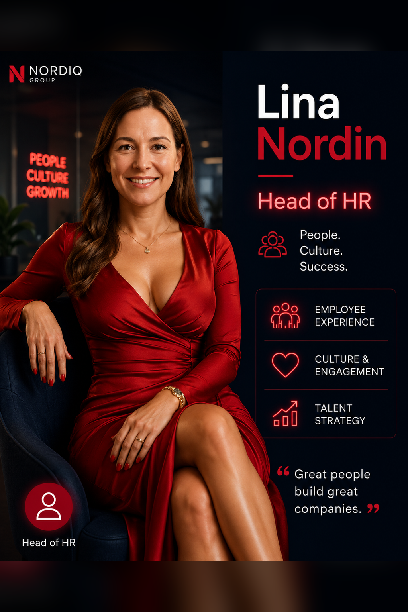
Lina Nordin
Vill: snabb onboarding och snabb hjälp.
Oro: fel access eller fel instruktioner.
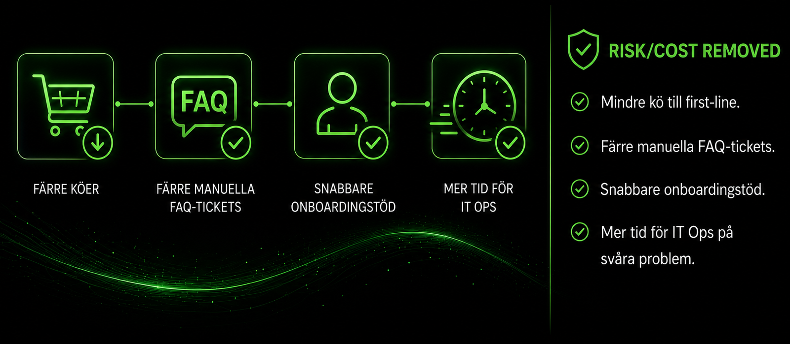
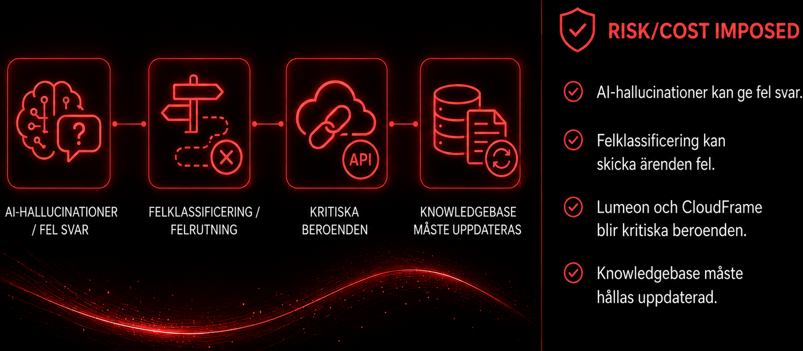
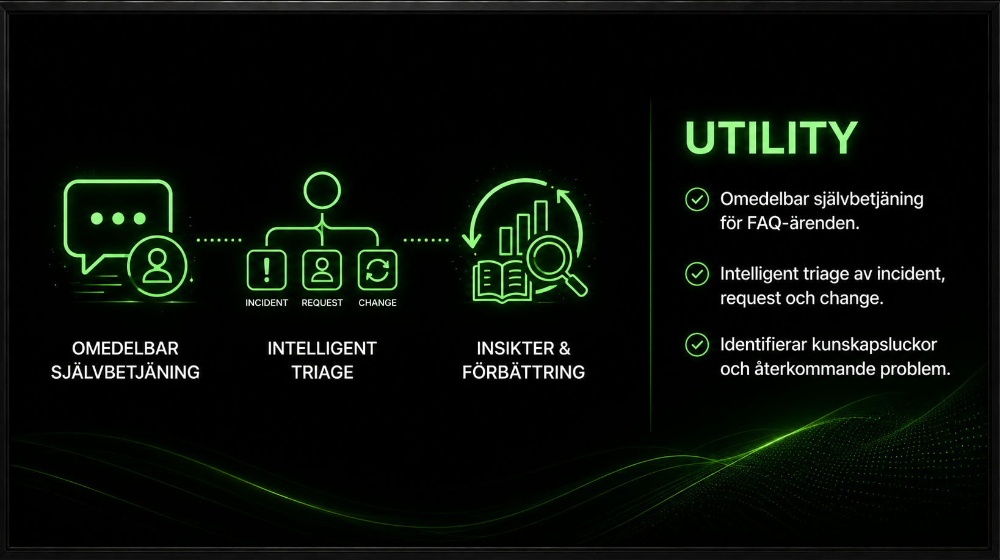
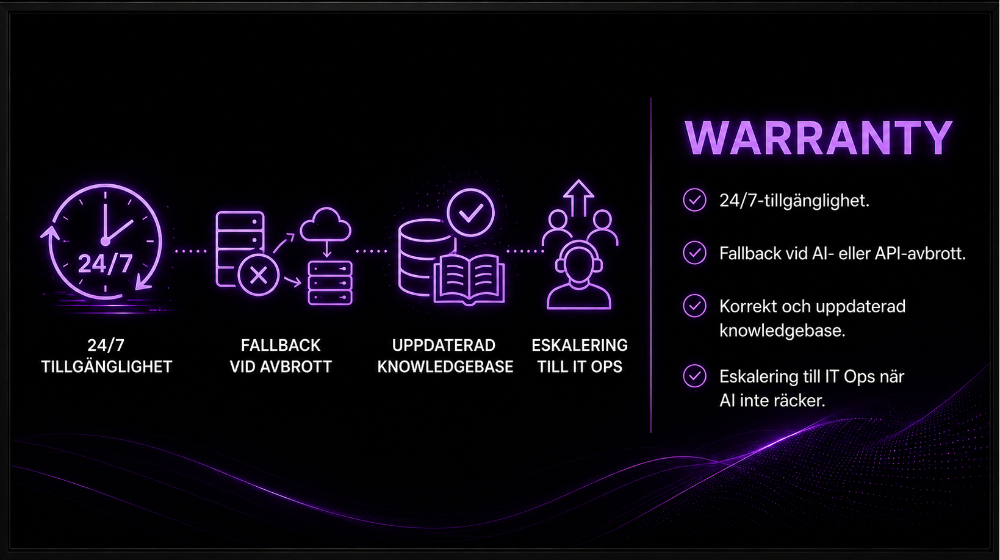
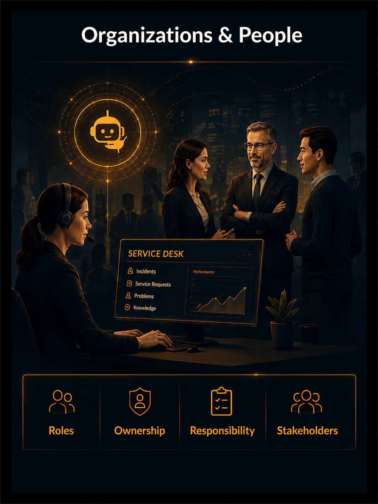
Vem äger AI-agentens svar? Hur påverkas Anna, Karl och service desk-teamet?
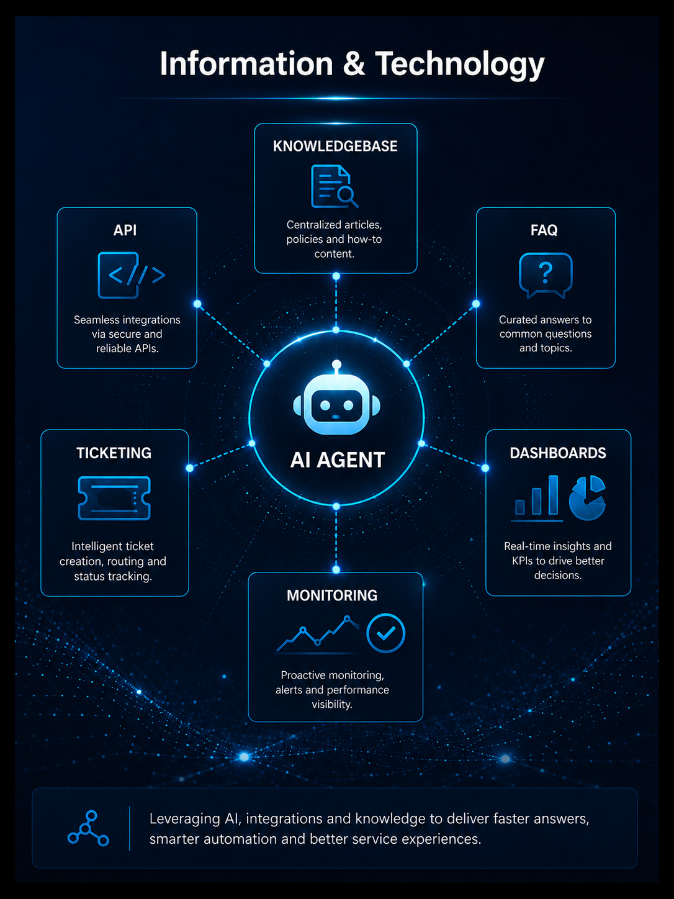
AI-agent, Lumeon API, knowledgebase, FAQ, ticketing och övervakning.
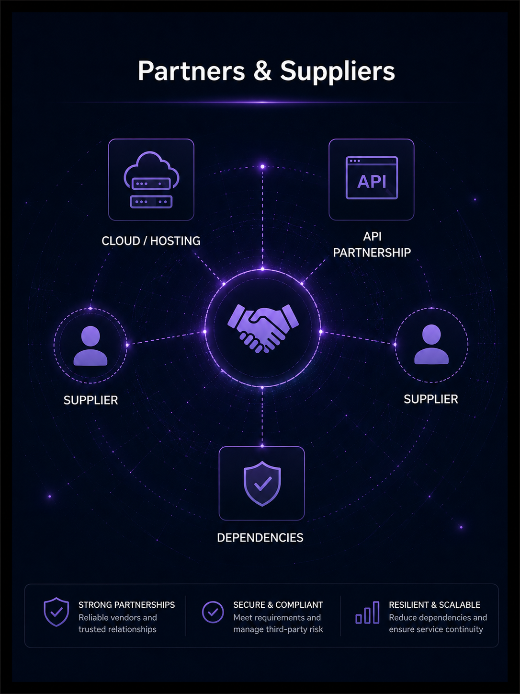
CloudFrame Nordic och Lumeon API är leverantörer som kan stoppa tjänsten.
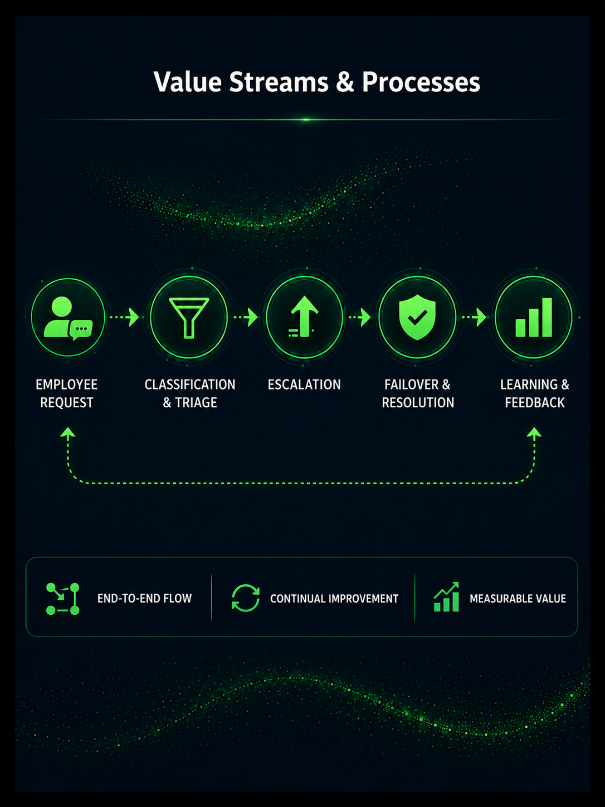
Från medarbetarens fråga till lösning, eskalering, failover och lärande.
Roller och ansvar måste vara tydliga innan go-live
Anna ärver driften, Karl förstår tekniken, Martin äger beslutet och Lina representerar tung användning. En öppen fråga är vem som äger kvaliteten i AI-agentens svar.
Risk: om ansvar är otydligt blir felaktiga AI-svar svåra att hantera.
Svarstid
Uptime
Klassificering
Eskalering
SLO är målet, SLI är mätningen
SLO beskriver vilken nivå NordIQ ska nå. SLI är den faktiska data som visar om målet uppnås, till exempel svarstid, upptid eller klassificeringsträff.
NordIQ-koppling: warranty blir konkret först när den kan mätas och följas upp.
Medarbetaren skickar in ärendet
En användare kontaktar NordIQ via Teams, e-post eller webbportal. Ärendet registreras direkt så det finns spårbarhet från första kontakt.
NordIQ-exempel: en ny medarbetare behöver åtkomst till ett verktyg.
Incident
Frågan: vad gör vi när tjänsten är störd just nu?
NordIQ: Lumeon API svarar inte, AI-chatten ligger nere eller eskalering fungerar inte.
Problem
Frågan: varför händer detta återkommande och hur tar vi bort orsaken?
NordIQ: klassificeringen sjunker under 85 % tre veckor i rad eller failover används för ofta.
Change
Frågan: hur kontrollerar vi ändringar så att vi inte skapar ny risk?
NordIQ: ny version av AI-agenten, ändrad routing eller ny knowledgebase-release.
Major incident playbook
När påverkan är bred blir målet att snabbt skydda användarna och återställa supportflödet.
Viktigaste beslutet
Ska AI-chatten stängas av helt eller ska emergency redirect till SharePoint FAQ och manuell ticket aktiveras?
Roller
Incident Commander koordinerar. Karl är technical lead. Lina kan vara communications lead. Anna/Ops driver triage.
1. Identifiering
Larm från övervakning eller användare, till exempel Lina som märker felaktiga svar.
2. Triage
Bedöm påverkan och deklarera Major Incident vid bred effekt.
3. Failover
Stäng AI-chatten eller styr om till SharePoint FAQ och manuell ticket.
4. Leverantör
Kontakta CloudFrame eller Lumeon om deras komponent misstänks.
5. All-clear
Verifiera normal funktion och informera organisationen.
Störningen upptäcks
Incidenten kan börja med larm från övervakning eller med att Lina/HR märker att AI:n ger felaktiga svar i onboardingflödet.
Praktiskt: första frågan är om det är en isolerad fråga eller bred påverkan på first-line-flödet.
Hitta grundorsaken
När? Efter incidenter som återkommer, har oklar orsak eller visar mönster.
NordIQ: failover används flera gånger, klassificering sjunker eller routing blir fel.
Granska vad som hände
När? När tjänsten är stabil igen och teamet kan analysera utan akut stress.
Frågor: Vad hände? Varför hände det? Vad fungerade bra och dåligt?
Gör lärandet till arbete
När? När Post-Incident Review och RCA har visat vad som behöver ändras.
Resultat: förbättringar får ägare, status, förväntat utfall och granskningsdatum.
Metoder
5 Whys passar enklare fel. Contributing Factors passar när AI-agent, knowledgebase, routing, människor och leverantörer samverkar.
Regler
Problem-ticket kräver länkade incidents. Workarounds ska ha bäst-före-datum. Failover fler än två gånger på 30 dagar öppnar problem-ticket.
Exempel
Om AI gav fel onboarding-svar kan förbättringen bli: uppdatera knowledgebase, testa klassificering och följa SLI-trend.
Akut driftansvar
Innehåller: SEV1/SEV2, war room inom 15 minuter och uppdatering till Incident Commander var 30:e minut.
Roller i incidenten
Innehåller: Incident Commander, Communications Lead, SME, Scribe och Customer Liaison.
NordIQ-koppling
AI-incidenter kan påverka många användare snabbt och kräver teknik, drift, kommunikation och leverantörskontakt.
Kontrollerad förändring
Innehåller: RFC för go-live med scope, teknisk ändring, riskbedömning, rollback, timeline och approver list.
CAB-underlag
Innehåller: beslutsunderlag till Martin, inte ett ersättande av Martins ansvar.
Release-beslut
Change Enablement kontrollerar risk så NordIQ inte bara kan byggas, utan släppas på ett ansvarsfullt sätt.
Martin, CIO
Beslut och politisk risk.
Anna, IT Ops
Drift, eskalering och second-line.
Karl, Dev
Teknisk risk och AI-agentens beteende.
Erik, CFO
Leverantörer och kostnad.
Lina, HR
Användarvärde och onboarding.
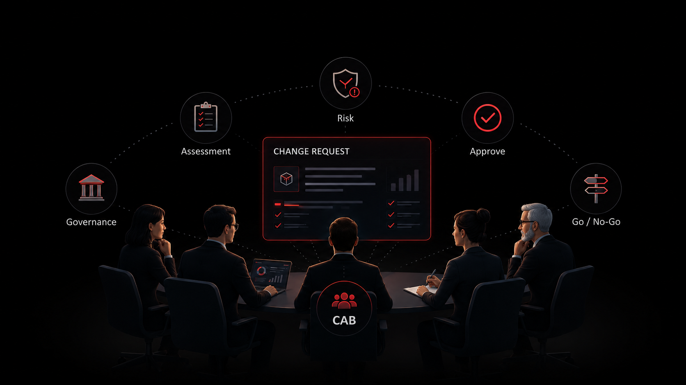
CAB:s syfte
Ge Martin ett komplett beslutsunderlag.
Change Authority och ägare av go/no-go
Martin bär den politiska risken uppåt och behöver en board-ready berättelse: värde, risk, driftbarhet och rollback.
Beslutsfråga: vågar NordTech gå live med NordIQ nu?
Teknisk hälsa
Gröna health checks i 24 sammanhängande timmar.
AI-kvalitet
Mindre än 5 procent av test-promptar får returnera felmeddelande.
Driftacceptans
P2/P3-plan godkänd av IT Ops och normalflöden testade i kvalitetssäkrad miljö.
Governance
Skriftligt godkännande från CAB.
Riskkontroll
Rollback-plan, fallback och incident playbook ska vara klara.
Beslut
Martin som Change Authority gör slutligt go/no-go.
Triggers
När ska rollback övervägas?
Rollback steps
Hur pausas NordIQ säkert?
What stays
Vad behålls för analys?
What restores
Vad återgår till tidigare läge?
Communication
Vem måste informeras?
Learning
Hur blir rollback input till förbättring?
Rollback ska inte vara en magkänsla
Exempel: mer än 10 procent av ärenden får ingen respons, Lumeon är nere över 30 minuter, felklassificering över accepterad nivå eller eskalering till IT Ops slutar fungera.
Praktiskt: kriterierna gör att Martin kan fatta beslut snabbt när tjänsten påverkar supportflödet.
1. Tänk tjänst, inte system
NordIQ är en service desk-tjänst med användare, värde, ansvar och risker.
2. Gör kvalitet mätbar
Warranty blir konkret först när den kopplas till SLO/SLI.
3. Planera för fel
Incident, problem, Post-Incident Review och continual improvement visar hur tjänsten förbättras efter störningar.
4. Beslut kräver governance
CAB, go/no-go och rollback gör att go-live inte bygger på magkänsla.
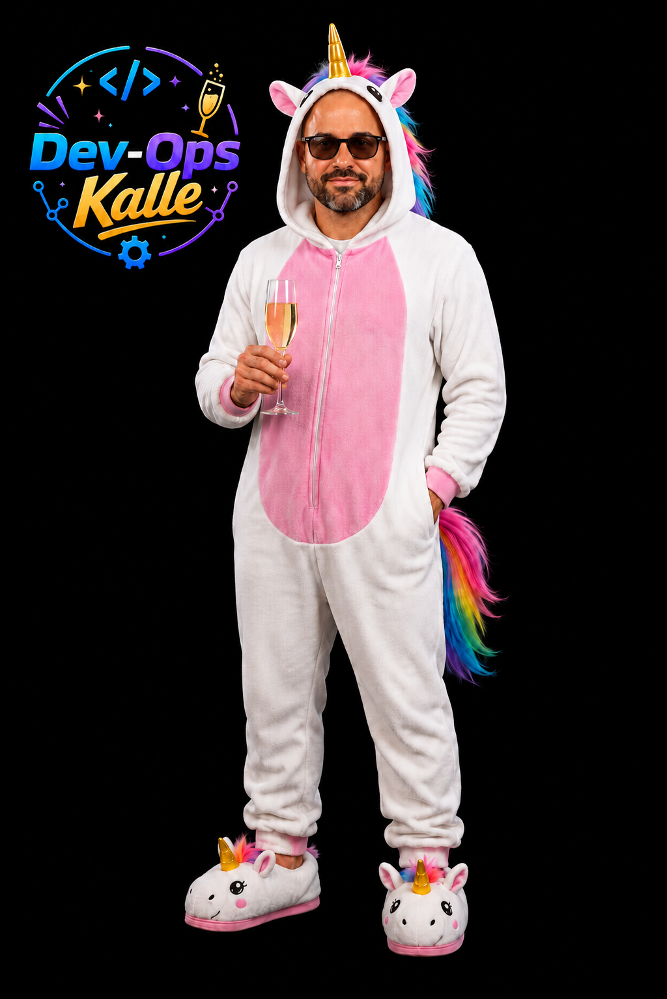
För frågor, maila Karl Eek på devopskalle@nordiq.se